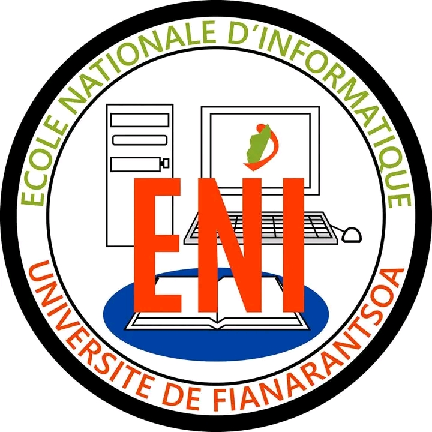

Assurer une transition reussie des etudiants vers le monde du
travail en leur fournissant des outils et des competences necessaires
pour integrer le marché de l'emploi dans le domaine de l'INFORMATIQUE.
Offrir des programmes académiques de qualité dans divers domaines de l'informatique, tels que le développement logiciel, les réseaux informatiques, la sécurité informatique, l'intelligence artificielle.
Encourager la recherche dans le domaine de l'informatique en collaborant avec d'autres institu-tions nationales et internationales pour contribuer à l'avancement des connaissances et des technologies.
Stimuler l'esprit d'innovation et d'entrepreneuriat chez les étudiants en les encourageant à développer des projets technologiques novateurs et à créer leurs propres entreprises dans le domaine des TIC.
Établir des partenariats avec des entreprises et des organisations du secteur privé pour offrir des opportunités de stage, des projets de recherche appliquée, et faciliter l'insertion profes-sionnelle des diplômés sur le marché du travail.
Former des professionnels compétents et adaptables,maîtrise des fondamentaux:
L'école doit fournir aux étudiants une solide compréhension des concepts clés de
l'informatique, tels que les systèmes d'exploitation, les réseaux, la programmation,
les bases de données et l'architecture.
Une formation en vue de l’obtention du diplôme de Licence Professionnelle en Informatique avec les trois parcours de formation:
➣Génie Logiciel et base de Données.(Uniersité de Fianaratsoa)
➣ Administration des Système et réseaux.(Uniersité de Fianaratsoa)
➣ Informatique Générale.(Uniersité de Fianaratsoa , Toliara)
La mention IA comporte deux parcours :
➣ Gouvernance et Ingénierie de Données (GID).(Uniersité de Fianaratsoa)
➣ Objets connectés et Cybersécurité (OCC).(Uniersité de Fianaratsoa)

Les écoles nationales d'informatique se distinguent des autres écoles d'informatique par
plusieurs particularités dont mission d'intérêt public, diplômes reconnus ainsi accès et
financement.
L'école vise à démocratiser l'accès à l'enseignement supérieur en informatique en offrant des programmes éducatifs de haut niveau qui sont accessibles aux étudiants de différents milieux socio-économiques.
L'expérience étudiante à l'ENI va au-delà des salles de classe. Des clubs d'informatique aux compétitions technologiques,
notre campus est un terrain fertile pour cultiver des passions, établir des connexions significatives et créer des souvenirs durables.
N'hésitez pas à nous contacter pour toute question ou information!!!
TELEPHONE: +261 34 05 733 36 / +261 32 15 204 28
EMAIL: eni@univ-fianarantsoa.mg
ADRESSE:
BP 1487 Tanambao Fianarantsoa, Madagascar